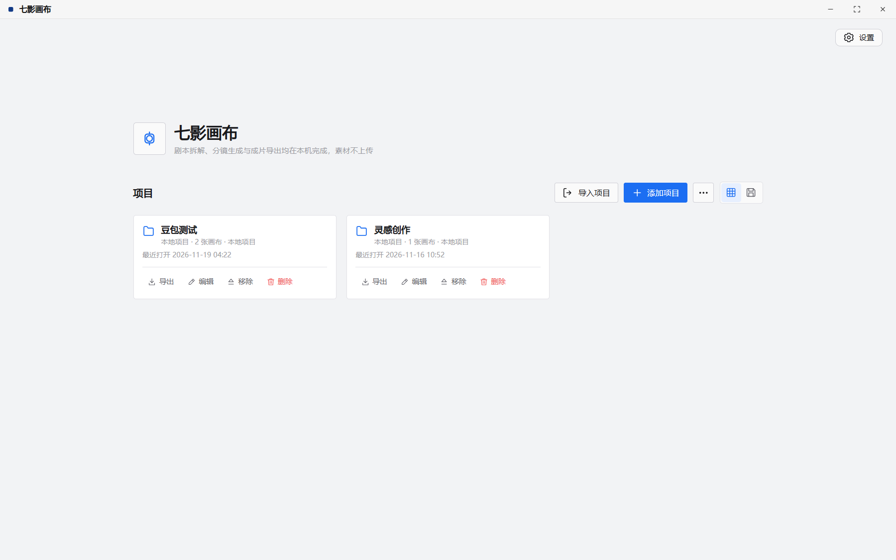
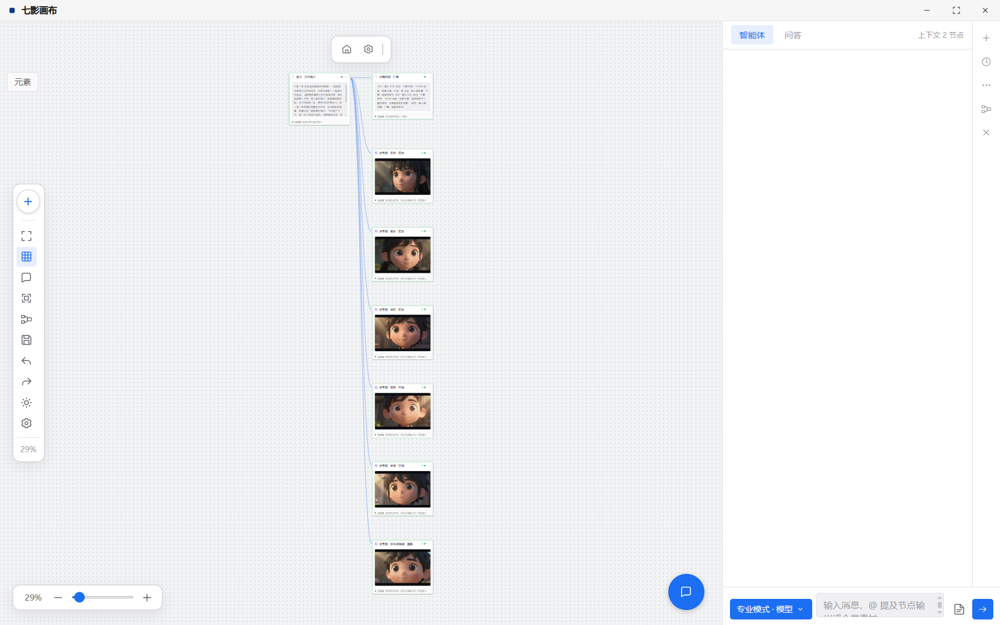
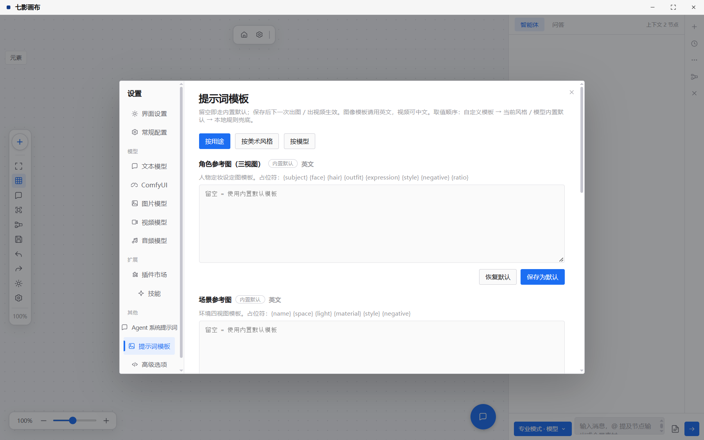

在一块画布上把剧本做成短剧成片
七影画布是一款 Windows 桌面软件。剧本拆解、脚本分镜、参考图、关键帧、视频片段到合成成片，各环节以节点排在同一张画布上；可直连 ComfyUI，提示词模板在设置里按用途、风格、模型三层修改。
功能说明
把出图、出视频的各个环节固定成画布节点，方便回看提示词、引用图和节点状态。
节点化流程
剧本、脚本、参考图、关键帧、视频片段、合成成片依次排在画布上；每个节点的提示词、引用图和状态都留在原处，可接着上次继续跑。
连接 ComfyUI
可填自建或云端 ComfyUI 地址；设为默认后出图优先走该实例，不再调用云端 API。
提示词模板可改
用途、风格、模型三层模板分开编辑；内置默认可直接用，改完保存为自己的模板，也能一键恢复默认。
可选美术风格
内置真人实拍、纪实市井、复古胶片、暗黑悬疑、3D 国漫、仙侠 CG、国风插画、赛璐璐、厚涂、赛博朋克等 20 种；风格词随所选风格写进提示词。
额度用完即停
可打开「额度用完即停止」开关；检测到 ComfyUI 已连接时优先走本地实例，模型无额度即停止，不继续产生费用。
资产复用
角色、场景、道具参考图作为资产保存，后续关键帧和视频引用同一份设定，减少跨镜头换脸、换装和画风不一致。
界面预览
以下为软件实际运行截图。



制作顺序
前一环节的产出作为下一环节的输入；每一步都能在画布上回看提示词与参考依据。
下载安装包
NSIS 安装程序，双击安装，带开始菜单和卸载项；ffmpeg 与技能资源已打包在内。
常见问题
当前安装包尚未做代码签名。确认安装包来源为本官网后，点击「更多信息 → 仍要运行」即可。软件不写系统目录，默认安装在当前用户目录下，可随时卸载。
软件本身只负责编排与本地逻辑；出图、出视频依赖你配置的模型供应商或 ComfyUI 实例。可以直连自建 ComfyUI，也可以在设置里填入云端模型的 API Key。文本模型无额度时，分镜走本地规则兜底。
可以。设置 → 提示词模板里分「按用途 / 按美术风格 / 按模型」三层编辑，内置默认作为参考；改完保存为自定义，随时可恢复默认。图像提示词建议写英文，视频提示词可使用中文。
画布数据、资产表与模板配置保存在本机浏览器本地存储与用户目录下；上传的参考素材存放在项目素材库，不上传到第三方服务器。卸载前如需保留工程，请先导出画布与素材。
当前发布的是 Windows x64 安装包。内核为跨端框架，后续可按需补充 macOS 与 Linux 构建；请以本页面下载区实际提供的版本为准。